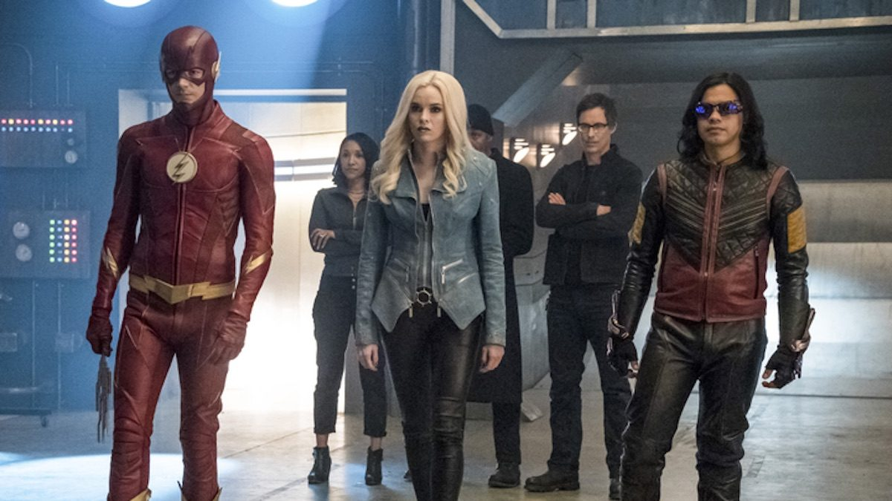

About The Flash
The Flash is a character from a CW Show. He was struck by lightning and gained the power of super speed. He now protects Central City from other metahumans (humans with special powers)
Team Flash
The Flash's Charactersistics
- He's got super speed
- He has an archnemesis called Reverse Flash
- He's got friends who are also meta-humans
The Flash's Friends
The Flash gained friends throughout his journey of becoming a super hero, but these friends are there for him whether or not he is being a hero. Click on the links below to read more about them